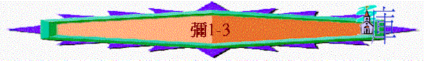

引言：神注視人的不義(1:1-3)
一.
1.二城的不義(1:5-16)
A.設立邱壇
「這都因雅各的罪過，以色列家的罪惡。雅各的罪過在那裡呢？豈不是在撒瑪利亞嗎？猶大的邱壇在那裡呢？豈不是在耶路撒冷嗎？」1:5
B.雕刻偶像
「他一切雕刻的偶像必被打碎；他所得的財物必被火燒；所有的偶像我必毀滅；因為是從妓女雇價所聚來的，後必歸為妓女的雇價。」1:7
C.遭神審判
a.遭拆毀
〜不單是偶像拆毀，凡從此而得的財物也被焚燒
b.終哀哭
〜以下用城的名字，帶出神的審判，人的悲哀
(1)
報告災難 ：迦特 ---- 報告
(2)
輥於灰塵 ：伯亞弗拉 ---- 灰塵之家
(3)
失去美麗 ：沙斐 ---- 美麗
(4)
不敢出來 ：撒南 ---- 出來
(5)
無處可站 ：伯以蒒 ---- 鄰埠
(6)
憂痛災禍 ：瑪律 ---- 苦毒、災禍
(7)
快馬逃走 ：拉吉 ---- 馬
(8)
道別家鄉 ：摩力設迦 ---- 許了婚的女子
(9)
遭受詭詐 ：亞革悉 ---- 欺騙
(10)城被奪取 ：瑪利法 ---- 奪取
(11)藏匿逃之 ：亞杜蘭 ---- 大衛躱避掃羅追殺之洞
2.為首的不義(2-3)
A.有權勢者
a.貪圖田地
「禍哉，那些在床上圖謀罪孽、造作奸惡的！天一發亮，因手有能力就行出來了。
他們貪圖田地就佔據，貪圖房屋便奪取；他們欺壓人，霸佔房屋和產業。」2:1-2
b.終得報應
「到那日，必有人向你們提起悲慘的哀歌，譏刺說：我們全然敗落了！耶和華將我們的分轉歸別人，何竟使這分離開我們？他將我們的田地分給悖逆的人。所以在耶和華的會中，你必沒有人拈鬮拉準繩。」2:4-5
〜「沒有人拈鬮拉準繩」指沒有地土再可以給人量，因神將他們的分給別人
B.作假先知者
a.禁止神的聖言
「他們（或作：假先知）說：你們不可說預言；不可向這些人說預言，不住地羞辱我們。」2:6
b.濫用神的屬性
「雅各家啊，豈可說耶和華的心不忍耐嗎（或作：心腸狹窄嗎）？這些事是他所行的嗎？我耶和華的言語豈不是與行動正直的人有益嗎？」2:7
〜他們以為神會有忍耐，所以不會審判他們
c.歪曲神的真理
「若有人心存虛假，用謊言說：我要向你們預言得清酒和濃酒。那人就必作這民的先知。」2:11
d.傷害神的百姓
「論到使我民走差路的先知，他們牙齒有所嚼的，他們就呼喊說：平安了！凡不供給他們吃的，他們就預備攻擊他（預備攻擊他：或作說必遭遇刀兵），耶和華如此說：」3:5
e.神相應的作為
(1)神說出真實的慘況
「然而，近來我的民興起如仇敵，從那些安然經過不願打仗之人身上剝去外衣。你們將我民中的婦人從安樂家中趕出，又將我的榮耀從他們的小孩子盡行奪去。
你們起來去吧！這不是你們安息之所；因為污穢使人（或作：地）毀滅，而且大大毀滅。」2:8-10
〜假先知說不安的景況完全是虛假，真正的情況是地與人也被毀滅
(2)神親自引領祂子民
「雅各家啊，我必要聚集你們，必要招聚以色列剩下的人，安置在一處，如波斯拉的羊，又如草場上的羊群；因為人數眾多就必大大喧嘩。開路的（或作：破城的）在他們前面上去；他們直闖過城門，從城門出去。他們的王在前面行；耶和華引導他們。」2:12-13
假先知不能真正牧養選民，末後神必親自引導祂的百姓
〜波斯拉可能是畜牧中心
(3)神使假先知受羞辱
「你們必遭遇黑夜，以致不見異象；又必遭遇幽暗，以致不能占卜。日頭必向你們沉落，白晝變為黑暗。先見必抱愧，占卜的必蒙羞，都必摀著嘴唇，因為神不應允他們。
至於我，我藉耶和華的靈，滿有力量、公平、才能，可以向雅各說明他的過犯，向以色列指出他的罪惡。」3:6-8
(A)
不能見異象
(B)
不能作占卜
(C)
不蒙神應允
(D)
終抱愧蒙羞
〜神要顯出假先知的軟弱、無力、不能、不義、但至於真正先知彌迦，靠著神的靈仍滿有力量、公平、才能
C.為官者
a.剝削平民
「吃我民的肉，剝他們的皮，打折他們的骨頭，分成塊子像要下鍋，又像釜中的肉。」3:3
b.屈枉止直
「雅各家的首領、以色列家的官長啊，當聽我的話！你們厭惡公平，在一切事上屈枉正直；」3:9
c.自欺欺人
「首領為賄賂行審判；祭司為雇價施訓誨；先知為銀錢行占卜。他們卻倚賴耶和華，說：耶和華不是在我們中間嗎？災禍必不臨到我們。」3:11
d.終得報應
(1)神掩面不看他們
「到了遭災的時候，這些人必哀求耶和華，他卻不應允他們。那時他必照他們所行的惡事向他們掩面。」3:4
〜他們不理百姓的死活，不斷剝削他們，至終神也不理官長的哀求
(2)神使錫安變荒涼
「所以因你們的緣故，錫安必被耕種像一塊田，耶路撒冷必變為亂堆；這殿的山必像叢林的高處。」3:12